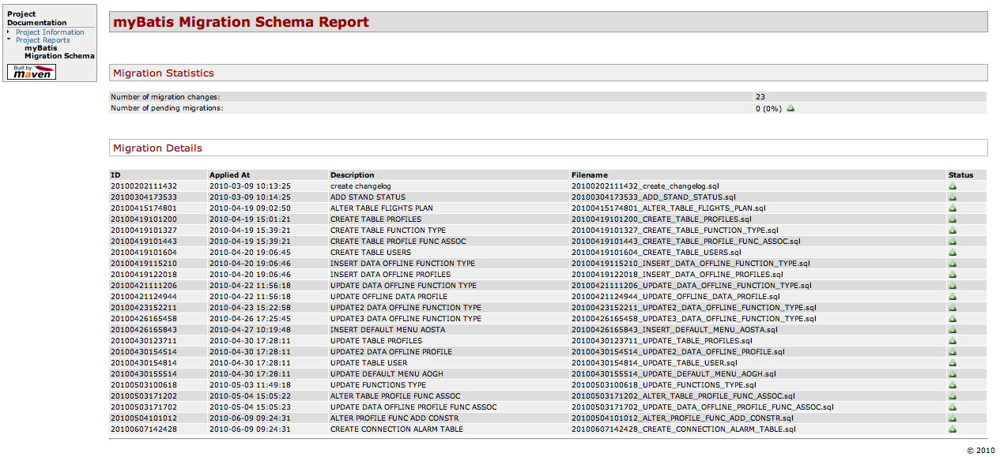

Intregrate migrate in Maven life cycle
It can be useful integrate Migration steps into a build life cycle, i.e. integrating the database schema creation into a CI build lifecycle.
<plugins>
<plugin>
<groupId>org.mybatis.maven</groupId>
<artifactId>migrations-maven-plugin</artifactId>
<version>1.2.1-SNAPSHOT</version>
<dependencies>
[ add your jdbc driver depencency ]
</dependencies>
<executions>
<execution>
<id>apply-all-pending-migration</id>
<phase>process-test-resources</phase>
<goals>
<goal>up</goal>
</goals>
<configuration>
<repository> [migration repository path] </repository>
</configuration>
</execution>
</executions>
</plugin>
<plugins>If your project uses the sub-modules you can set your parent pom in this way:
<build>
<pluginManagement>
<plugins>
<plugin>
<groupId>org.mybatis.maven</groupId>
<artifactId>migrations-maven-plugin</artifactId>
<version>1.2.1-SNAPSHOT</version>
<dependencies>
[ add your jdbc driver depencency ]
</dependencies>
<configuration>
<skip>true</skip>
</configuration>
</plugin>
</plugins>
</pluginManagement>
<plugins>
<plugin>
<groupId>org.mybatis.maven</groupId>
<artifactId>migrations-maven-plugin</artifactId>
</plugin>
</plugins>
</build>Then, in submodules:
<plugins>
<plugin>
<groupId>org.mybatis.maven</groupId>
<artifactId>migrations-maven-plugin</artifactId>
<configuration>
<repository> [migration repository path] </repository>
<skip>false</skip>
</configuration>
<executions>
<execution>
<id>migration-chack</id>
<phase>test</phase>
<goals>
<goal>check</goal>
</goals>
<inherited>false</inherited>
</execution>
</executions>
</plugin>
<plugins>Use Migration commands
Migration plugin aims to help you to administer your database via MyBatis Schema Migration, so, i.e, you can use this plugin to create new migration scripts and to apply the pending scripts to your database. The following example will show the common commands to create and administer your database.
First of all you have to initialize your migration repository:
mvn migration:init -Dmigration.path=/path/to/repository
This command inizializes the standard migration repository into /path/to/repository folder.
After you have to modify and customize your enviroment: edit the file
/path/to/repository/enviroments/development.properties and set the database coordinte.
So you can apply the first migration to the database:
mvn migration:up -Dmigration.path=/path/to/repository
Now it is possible to create the new script:
mvn migration:new -Dmigration.path=/path/to/repository -Dmigration.description=my_second_schema_migration
the command creates a new empty sql file into the folder /path/to/repository/scripts
like this:
--// First migration. -- Migration SQL that makes the change goes here. --//@UNDO -- SQL to undo the change goes here.
now you can check the current status of your database by executing this the status goal:
mvn migration:status -Dmigration.path=/path/to/repository [INFO] Executing Apache Migration StatusCommand [INFO] ID Applied At Description [INFO] ================================================================================ [INFO] 20100400000001 2010-04-24 22:51:16 create changelog [INFO] 20100400000002 2010-04-24 22:51:17 first migration [INFO] 20100400000003 ...pending... my second schema migration [INFO]
finally you can apply the last migration pending script:
mvn migration:up -Dmigration.path=/path/to/repository mvn migration:status -Dmigration.path=/path/to/repository [INFO] Executing Apache Migration StatusCommand [INFO] ID Applied At Description [INFO] ================================================================================ [INFO] 20100400000001 2010-04-24 22:51:16 create changelog [INFO] 20100400000002 2010-04-24 22:51:17 first migration [INFO] 20100400000003 2010-04-24 23:14:07 my second schema migration [INFO]
Migration plugin report
Migration plugin report with warnings